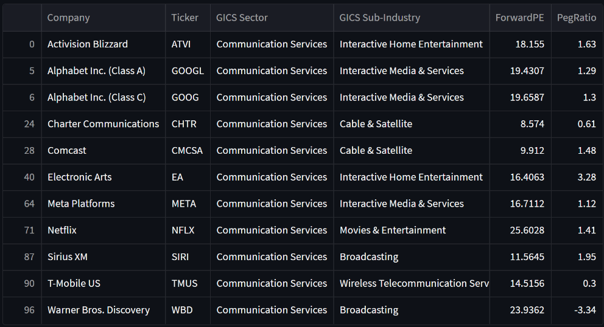
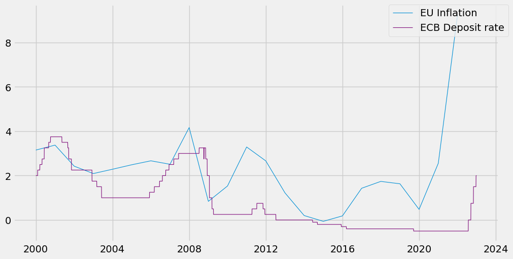

In this project we explore a dataset containing 500 000 tweets on ChatGPT, we start by performing some data cleaning.
We then perform some sentiment analysis on the tweets to see the evolution of public opinion on ChatGPT.
We finish by performing some Exploratory Data Analysis on the data.


This project focuses on forecasting the S&P500 index using the Prophet model and generating visualizations for each forecast.
We aim to enhance the model's performance through hyperparameter optimization techniques such as grid search and custom seasonalities.
Additionally, we evaluate the effectiveness of each model by employing cross-validation methods and various performance metrics.

Tableau Dashboards for projects on Tennis 2022 ATP season and Barcelona airbnb pricing.

Streamlit application that allows users to retrieve a list of companies in the Nasdaq 100 index and obtain various financial information about their respective stocks. The app provides essential financial metrics such as the Price/Earnings to Growth Ratio (PEG ratio), Price to Earnings ratio (P/E ratio), and more.
In addition to displaying individual company data, the app also enables users to compare the financial information against competitors and the average values of the industry. This feature provides valuable insights into how a particular company's financials stack up against others in the same sector.
To ensure flexibility and ease of deployment, the app can be run either locally or using Docker. Running it locally allows for direct interaction with the application on your local machine, while using Docker provides a containerized environment that simplifies the setup process and ensures consistency across different platforms.

Economic data analysis on the relation between inflation and major central bank interest rates in the UE and the US.